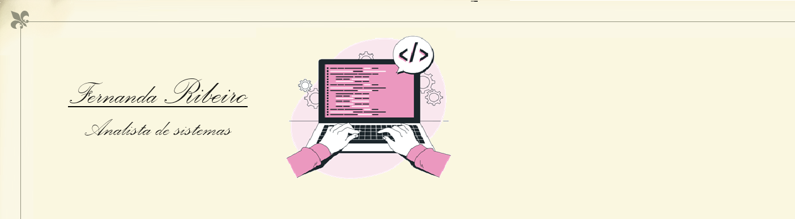

Currículo
Dados
Nome:Fernanda Maria Ribeiro
Idade:32 anos
Email:fernanda.mgr.si@gmail.com
Linkedin::www.linkedin.com/in/fernanda-ribeiro-49a08a204
Lathes:http://lattes.cnpq.br/0126828009061078
Qualificações
Inglês:Básico
Formação acadêmica/titulação
Graduada em Sistemas de Informação, na Universidade Federal dos Vales do Jequitinhonha e Mucuri - UFVJM. (2009-2014)
Metrado em Ciência da Computação na área de processamento de sinais de áudio, na Universidade Federal De Ouro Preto. (2014- 2018)
Pós-graduada em MBA EXECUTIVO EM GESTÃO COMPETITIVA E BUSINESS INTELLIGENCE (BI), na Faculdade Única de Ipatinga. (2021-2021)
Resumo profissional
Analista de desenvolvimento de software, atuando desde a coleta dos dados até os testes com o software.
Com Experiência através de projetos e estágios desenvolvidos na UFVJM, realizando todos os processos como a extração de requisitos dos usuários, desenvolvendo, testes finais e treinamento.
Experiência em processamento de imagens e áudios, trabalhando com a extração e classificação de sinais de áudio de voz.
Experiência na área de secretariado e docência do ensino superior.
Experiências
- Instituição/Empresa: Universidade Federal dos Vales do Jequitinhonha e Mucuri (UFVJM)
Bolsa/Cargo: Iniciação Cientifica e Tecnológica
Período: 11/2010 a 11/2012
Atividades Desenvolvidas:
- Automatização do processo de coleta de dados para pesquisa de demanda turística na cidade de Diamantina, através de dispositivos móveis (Palm).
- Criação de aplicativos que facilitem o processo de geração e junção de dados gerados através desses dispositivos.
- Geração de manuais e artigos sobre o tema.
- Instituição/Empresa: Universidade Federal dos Vales do Jequitinhonha e Mucuri (UFVJM)
Bolsa/Cargo: Estágio Curricular Remunerado
Período: 17/10/2012 à 16/04/2013
Atividades Desenvolvidas:
- Site em Joolan para o departamento de Assistência Estudantil (não terminado devido a saída para o estágio obrigatório)
- Recepção de alunos e pessoal na portaria e telefone.
- Ajuda no arquivamento dos documentos de assistência estudantil
- Instituição/Empresa: Universidade Federal dos Vales do Jequitinhonha e Mucuri (UFVJM)
Bolsa/Cargo: Estágio Curricular Obrigatório não remunerado
Período: 04/12/2012 à 12/04/2013
Atividades Desenvolvidas:
- Desenvolvimento de aplicativo para organização de base de dados de gerenciamento do patrimônio da Universidade Federal dos Vales do Jequitinhonha e Mucuri.
- Instituição/Empresa: Universidade Federal dos Vales do Jequitinhonha e Mucuri (UFVJM)
Bolsa/Cargo:Bolsa Estudantil modalidade Atividade, no departamento de Assistência
Período: 17/04/2013 à 01/09/2013
Atividades Desenvolvidas:
- Auxiliar na continuação do desenvolvimento do site através do WordPress
- Recepção de alunos e pessoal na portaria e telefone.
- Ajuda no arquivamento dos documentos de assistência estudantil.
- Instituição/Empresa:Faculdade Arquidiocesana de Curvelo (FAC)
Bolsa/Cargo:Professora de Ensino Superior
Período:02/08/2018 a 21/12/2018; 03/08/2019 a 20/12/2019;03/08/2020 a 18/12/2020 e 02/08/2021 – 17/12/2021
Atividades Desenvolvidas:
- Leciono uma aula semanal da disciplina de Informática Aplicada, nos cursos modular de Administração e Ciências Contábeis.
- E Aulas de Tutoria de informática
- Instituição/Empresa:Faculdade Arquidiocesana de Curvelo (FAC)
Bolsa/Cargo: Secretária Acadêmica
Período: 06/03/2017 a 23/12/2022
Atividades Desenvolvidas:
- Auxiliar nas funções acadêmicas e administrativas da secretária das coordenações: (Todos os cursos, da extensão e da pesquisa)
- Controlar o sistema EAD e dar suporte para professores e alunos. (durante a pandemia auxiliar através do Meet e Google Sala de Aula professores e alunos)
- Controlar os documentos de estágio não obrigatório e obrigatório.
- Fazer a análise estatística dos dados da avaliação institucional (CPA)
- Recepcionar e atender telefones.